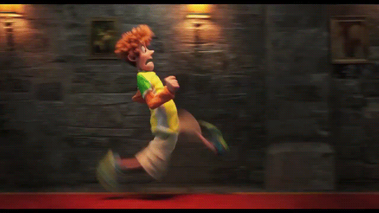

Chegando no hotel, Jonathan e Mavis descobriram que Dennis foi sequestrado pelos capangas do pai de Drácula. O que ele faz?
- 1 - Vai embora por ter muito medo de monstros e deixa para Mavis resolver.
- 2 - Ele sai correndo e entra na luta para resgatar seu filho junto com Mavis e Drácula.